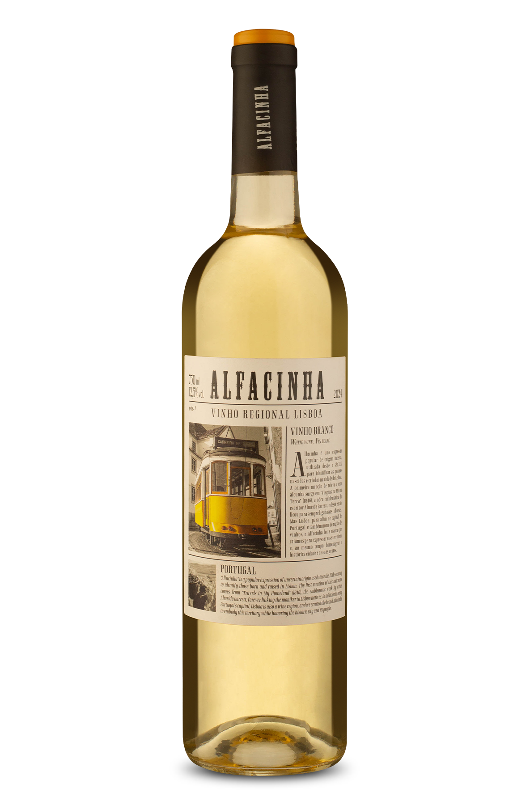

Alfacinha Regional Lisboa Branco 2024
Fresco, cítrico e perfumado: um branco português seco de Lisboa elaborado sem madeira, com notas limpas de limão, flores brancas e frutas frescas — leve e super fácil de beber bem gelado.
 • Valor único exclusivo R$49,90
• Valor único exclusivo R$49,90
Sem surpresas na hora de escolher: pegue na adega, escaneie e leve em segundos.
Por que você vai gostar deste branco?
Assinado pelo enólogo Carlos Eduardo na Parras Wines, o Alfacinha Branco 2024 combina a exuberância aromática da uva Fernão Pires com a acidez cítrica natural da Arinto, fermentado em pequenas cubas de inox.
Amarelo claro com reflexos esverdeados
Cor luminosa e cristalina que revela a juventude e o frescor da safra 2024.
Frutas cítricas, flores brancas e toque tropical
Aromas limpos e expressivos de limão, frutas brancas frescas e flores delicadas.
Leve, equilibrado e sensação cítrica no final
Seco e refrescante sem passagem por madeira, com corpo leve e final gostoso que remete a limonada fresca.
Escolha certa para quem busca um branco português seco, aromático e leve — ideal para dias quentes, entradas, saladas e pratos do mar.
Mapa de Sabor
Guia visual rápido para você acertar na escolha
Combina com o quê?
Companhia perfeita para peixes, frutos do mar, ceviches, carnes brancas e queijos leves de massa cremosa.
Harmonizações Salgadas
-
Peixes & Frutos do Mar: Filé de peixe grelhado, camarão salteado, lulas e ceviche leve.
-
Saladas & Aves: Saladas frescas com molho cítrico, frango grelhado com ervas e risoto de limão.
-
Queijos Cremosos & Entradas: Queijos frescos, queijo de cabra, brie e bruschettas leves.
Harmonizações Doces
-
Frutas Frescas: Salada de frutas com pera, maçã verde, uvas e abacaxi.
-
Tortas Cítricas Suaves: Torta de limão pouco doce ou bolo simples de laranja.
-
Queijo com Mel: Queijo brie com mel suave e castanhas ou amêndoas tostadas.
Almoço de fim de semana, jantar leve com peixe ou aperitivo na varanda.
Casal, amigos ou família em dias mais quentes.
Almoço, fim de tarde ensolarado ou início de noite.
Entre 8°C e 10°C (~45 a 60 minutos na geladeira antes de abrir).
Uma viagem pelos sabores frescos de Lisboa
"Alfacinha" é o apelido carinhoso dos habitantes de Lisboa, imortalizado no século XIX por Almeida Garrett em "Viagens na Minha Terra". O rótulo com o tradicional elétrico amarelo celebra a cidade e a região vinícola atlântica que envolve a capital portuguesa.
Produzido pela Parras Wines com o enólogo Carlos Eduardo, o corte meio a meio de Fernão Pires e Arinto fermenta em cubas de aço inox de pequena capacidade para preservar toda a vivacidade cítrica natural da região.
Ficha Rápida do Rótulo
- Uvas:
- 50% Fernão Pires e 50% Arinto
- Região:
- Vinho Regional Lisboa (IG Lisboa), Portugal
- Produtor:
- Parras Wines
- Safra / Vinificação:
- 2024 • Cubas de Aço Inox
- Teor Alcoólico:
- 12,5% vol. • Seco